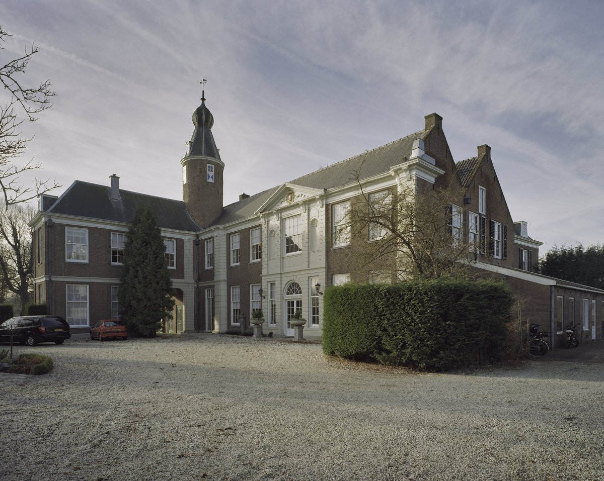

Bezienswaardigheden
 Kasteel Marquette in Heemskerk is gebouwd op de grondvesten van het oude rondeel Slot te Heemskerck. Slot Heemskerk stamt uit de periode rond 1250. Het rondeel maakte deel uit van een lange keten van kastelen ter verdediging tijdens de West-Friese Oorlogen. Het werd bewoond door de Heren van Heemskerk, die bestuur en rechtspraak uitoefenden in het ambacht Heemskerk en Castricum. Een groot deel van het bijzondere interieur van Slot Assumburg is eind 19e eeuw overgebracht naar Marquette. In de Tweede Wereldoorlog werd kasteel Marquette door de Duitse bezetting gebruikt als weerstation. Het kasteel werd een paar keer beschoten door de geallieerden, waarbij het dak van het kasteel flink beschadigd werd. De laatste eigenaar, jhr. Gevers van Marquette, droeg het landgoed in 1980 over aan het Heemskerkse waterbedrijf PWN. Daarna werd het gerestaureerd en geschikt gemaakt als conferentieoord.
 Slot Assumburg is een kasteel in het oosten van Heemskerk. Het dateert waarschijnlijk oorspronkelijk uit de 13e eeuw, maar werd in 1546 verbouwd, en is genoemd naar de buurtschap Assum tussen Heemskerk en Uitgeest. Er wordt wel aangenomen dat bij de bouw is gebruikgemaakt van sloopmateriaal van kasteel Oud Haerlem, maar dat is niet het geval. De kracht die het kasteel uitstraalt, is ook meer schijn dan werkelijkheid. Het is in feite een imitatie van een middeleeuws kasteel. De dunne muren zouden een beleg niet hebben kunnen doorstaan. Een dergelijk kasteel wordt doorgaans coulissenkasteel genoemd. Naast het slot bevindt zich het natuur- en recreatiepark Assumburg, dat in 2003 is aangelegd. Vanaf 2009 werd de 18e-eeuwse kasteeltuin in originele staat hersteld en in 2011 geopend voor het publiek. De kasteeltuin bevat onder meer een fruitboomgaard, een rosarium, een groente- en kruidentuin en een groot formeel gedeelte met hofvijver.
Dit monument is op 15 januari 2016 overgedragen aan de Nationale Monumentenorganisatie.
Slot Assumburg is een kasteel in het oosten van Heemskerk. Het dateert waarschijnlijk oorspronkelijk uit de 13e eeuw, maar werd in 1546 verbouwd, en is genoemd naar de buurtschap Assum tussen Heemskerk en Uitgeest. Er wordt wel aangenomen dat bij de bouw is gebruikgemaakt van sloopmateriaal van kasteel Oud Haerlem, maar dat is niet het geval. De kracht die het kasteel uitstraalt, is ook meer schijn dan werkelijkheid. Het is in feite een imitatie van een middeleeuws kasteel. De dunne muren zouden een beleg niet hebben kunnen doorstaan. Een dergelijk kasteel wordt doorgaans coulissenkasteel genoemd. Naast het slot bevindt zich het natuur- en recreatiepark Assumburg, dat in 2003 is aangelegd. Vanaf 2009 werd de 18e-eeuwse kasteeltuin in originele staat hersteld en in 2011 geopend voor het publiek. De kasteeltuin bevat onder meer een fruitboomgaard, een rosarium, een groente- en kruidentuin en een groot formeel gedeelte met hofvijver.
Dit monument is op 15 januari 2016 overgedragen aan de Nationale Monumentenorganisatie.